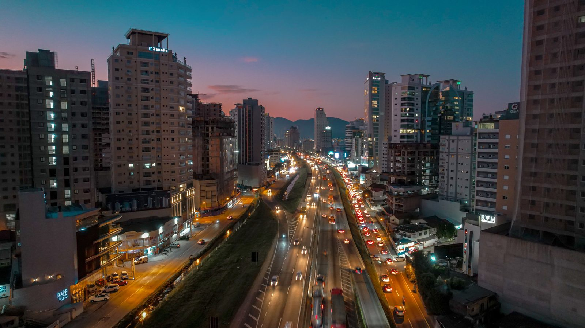

Câmara libera empréstimo de até R$ 250 milhões para obras em Itapema
O dinheiro deve ir para mobilidade, saúde, educação e urbanização.
Leia · Câmara de Vereadores de ItapemaPela primeira vez em muito tempo, três obras de mobilidade caminham ao mesmo tempo no litoral norte. Uma rodovia nova, uma rota alternativa entre duas cidades e uma ponte para distribuir o trânsito urbano.
Modo de Leitura · formato original Santa Informa
InfraestruturaPublicada em Atualizada em 5 de agosto de 2026, 17h02Redação Santa Informa

O litoral norte catarinense cresceu apoiado em uma única ligação contínua, a BR-101. Ela carrega o caminhão que abastece o comércio, o morador que trabalha na cidade vizinha e o turista que chega de fora, tudo na mesma faixa. Distribuir esse fluxo é o desafio de infraestrutura mais importante da região, e ele agora tem três respostas em andamento ao mesmo tempo.
O Governo de Santa Catarina autorizou o início dos projetos executivos da Via Mar, também chamada de Corredor Litorâneo Norte. É uma rodovia estadual nova, paralela à BR-101, desenhada para absorver o tráfego local e devolver à federal a função de rota de passagem.
O projeto executivo é a etapa em que a obra ganha traçado definitivo, orçamento detalhado e cronograma. Sair do estudo genérico para o projeto executivo é o passo que transforma intenção em obra licitável, e é o que acaba de acontecer.
Enquanto a Via Mar avança no papel, a região ganha uma alternativa de prazo mais curto. A Estrada do Morro do Encano, entre Camboriú e Itapema, recebe pavimentação para virar rota de veículos leves nos períodos de pico.
E ela vem com um bônus que não estava na conta: o projeto inclui mirante e ciclovia. A obra resolve deslocamento e ainda entrega um passeio novo para quem mora aqui, que é o tipo de ganho duplo raro em obra de estrada.
A terceira frente é uma ponte nova prevista para melhorar a distribuição do tráfego entre Porto Belo e Itapema. Hoje o trajeto entre as duas cidades depende da BR-101, mesmo para quem só quer atravessar do outro lado. A ligação urbana direta tira da rodovia federal um trecho de viagem que nunca precisou estar nela.
Fontes: Governo de Santa Catarina, DNIT e ND Mais.
O dinheiro deve ir para mobilidade, saúde, educação e urbanização.
Leia · Câmara de Vereadores de ItapemaSeis cidades, um roteiro. O que vale a parada, o que custa e o que é de graça.
Leia · Prefeituras e SanturDrenagem, contenção, calçada padronizada e rua sendo preparada para asfalto.
Leia · Secretaria de Obras de Itapema